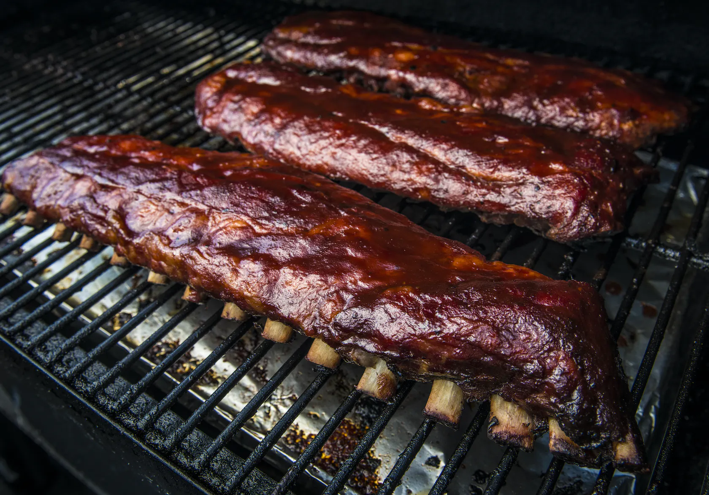

3-2-1 BBQ BABY BACK RIBS

Be the Talk of The Neighborhood With These Ribs
Our famously easy 3-2-1 ribs recipe will make your rib game the envy of the neighborhood. This super simple recipe takes all the confusion out of making ribs without sacrificing any flavor. Start by smoking your ribs for 3 hours, then cook inside foil for 2 hours and finish by removing from foil and brushing on sauce for up to 1 hour.
INGREDIENTS
- 2 Rack baby back pork ribs
- 1/3 Cup yellow mustard
- 1/2 Cup apple juice, divided
- 1 Tablespoon Worcestershire sauce
- To Taste Traeger Pork & Poultry Rub
- 1/2 Cup dark brown sugar
- 1/3 Cup honey, warmed
- 1 Cup Traeger 'Que BBQ Sauce
STEPS
- If your butcher has not already done so, remove the thin silverskin membrane from the bone-side of the ribs by working the tip of a butter knife or a screwdriver underneath the membrane over a middle bone. Use paper towels to get a firm grip, then tear the membrane off.
- In a small bowl, combine the mustard, 1/4 cup of apple juice (reserve the rest) and the Worcestershire sauce. Spread the mixture thinly on both sides of the ribs and season with Traeger Pork & Poultry Rub.
- INGREDIENTS
- 1/3 Cup yellow mustard
- 1/2 Cup apple juice, divided
- 1 Tablespoon Worcestershire sauce
- To Taste Traeger Pork & Poultry Rub
- When ready to cook, set Traeger temperature to 180℉ and preheat, lid closed for 15 minutes. Smoke the ribs, meat-side up for 3 hours, or until the internal temperature reaches 160℉.
- After the ribs have smoked for 3 hours, transfer them to a rimmed baking sheet and increase the grill temperature to 225℉.
- Tear off four long sheets of heavy-duty aluminum foil. Top with a rack of ribs and pull up the sides to keep the liquid enclosed. Sprinkle half the brown sugar on the rack, then top with half the honey and half the remaining apple juice. Use a bit more apple juice if you want more tender ribs. Lay another piece of foil on top and tightly crimp the edges so there is no leakage. Repeat with the remaining rack of ribs.
- Return the foiled ribs to the grill and cook for an additional 2 hours, or until internal temperature reaches 205℉.
- Carefully remove the foil from the ribs and brush the ribs on both sides with Traeger 'Que Sauce. Discard the foil. Arrange the ribs directly on the grill grate and continue to grill until the sauce tightens, 30 to 60 minutes more.
- Let the ribs rest for a few minutes before serving. Enjoy!